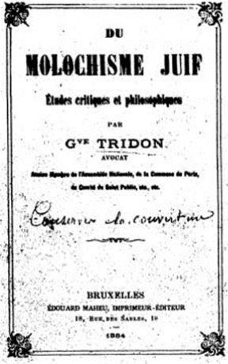

Si l’on s’en tient à la vulgate, sont considérés comme appartenant à cette catégorie les gens qui refusent la démocratie et qui prônent la domination des peuples par la pratique de la violence. Au surplus, on prête aux tenants de ces doctrines extrémistes une volonté impérialiste et même un secret désir de conquête du monde afin d’assouvir leur volonté de puissance.
Est fréquemment ajoutée à cette définition la suspicion de racisme, voire d’antisémitisme qui ferait partie de la panoplie complète et exclusive du militant d’extrême-droite.
Pourtant c’est oublier un peu vite que l’antisémitisme voire le racisme sont nés à gauche comme en fait foi une abondante littérature servie par des auteurs comme Charles Fourier dans son « Apologue du Juif Iscariote », Gustave Tridon, disciple de Blanqui, auteur du « Molochisme juif », Alphonse Toussenel avec « Les Juifs, rois de l’époque », Pierre-Joseph Proudhon, notamment dans le journal « Le Peuple », sans oublier Albert Regnard, qui écrivait dans la Revue Socialiste : « la réalité et 1’excellence de la race aryenne, de cette famille unique à laquelle l’humanité doit les merveilles du siècle – et qui seule est en mesure de préparer et d’accomplir l’achèvement suprême de la rénovation sociale ». Dernier exemple parmi beaucoup d’autres, celui d’Auguste Chirac, autre collaborateur de la Revue Socialiste qui publia en 1876 « Les Rois de la République : histoire des juiveries ».
C’est dans cette matrice intellectuelle, que l’on retrouve ailleurs en Europe à la même époque, que sont nées les doctrines politiques du XIXème et du XXe siècle qui aboutiront à la naissance des États à visées totalitaires.
Voilà pour tordre le cou aux assertions répétées de la « bienpensance boboïste », seule habilitée dans notre société du mensonge à décerner les brevets d’honorabilité.
Cet antisémitisme de gauche a essaimé également dans les milieux de droite, particulièrement lors de l’affaire Dreyfus, notamment au sein de l’Action française de Charles Maurras, même si au début de cette affaire, un Jean Jaurès lui-même pouvait encore écrire en 1895 dans La Dépêche de Toulouse des propos aussi extrémistes que ceux-ci : « sous la forme un peu étroite de l’antisémitisme se propage en Algérie un véritable esprit révolutionnaire (…) L’usure juive réconcilie contre elle l’Européen et l’Arabe ! ». On est loin du décret Crémieux…
C’est dans ce bain intellectuel - où des intellectuels de droite et de gauche, Georges Sorel étant l’illustration parfaite de la synthèse entre ces deux courants -, que ces idéologies mortifères ont prospéré en mettant en place un racisme institutionnalisé, véritable perversion de l’esprit.
L’escroquerie intellectuelle qui signe la mise en place de ce concept incapacitant destiné à réduire au silence les adversaires du Système prend naissance au lendemain de la seconde guerre mondiale où se crée le mythe d’une France résistante qui n’aurait compté en son sein que des communistes et des gaullistes alors que la collaboration ne se serait appuyée que sur des hommes qualifiés d’extrême-droite. Là encore c’est oublier un peu vite que les premiers résistants de 1940 furent souvent des hommes de droite, issus pour la plupart de l’Action française ou influencés par elle (Henri Frenay, Gilbert Renault alias Colonel Rémy, Honoré d’Estienne d’Orves, Pierre de Bénouville, Georges Loustaunau-Lacau, Alain Griotteray, Daniel Cordier, Jean-Baptiste Biaggi et bien d’autres).
Le mensonge est d’autant plus énorme et scandaleux que la plupart des militants communistes n’entreront en résistance qu’après l’entrée en guerre de l’Allemagne contre l’URSS en juin 1941. C’est oublier aussi que les deux principaux partis collaborationnistes, RNP de Marcel Déat et PPF de Jacques Doriot étaient issus, l’un de la SFIO, ancêtre du Parti socialiste et l’autre du Parti communiste.
C’est à partir de ce mensonge constamment asséné sous forme de syllogisme implicite : collaboration = fascisme = camps de la mort = extrême-droite, qu’a été tissée cette véritable tunique de Nessus que l’on met aujourd’hui sur les épaules de quiconque prétend défendre la nation ou tout simplement son identité ou sa culture, dès lors qu’elle n’est pas exotique bien sûr. C’est ainsi qu’est affublée de nos jours de cette étiquette infamante toute personne qui prétend s’opposer à la politique immigrationniste du Système et à la priorité des Français sur leur propre territoire.
Les partis de gauche institutionnels ayant pris fait et cause pour les banquiers de Wall street et de la City et formant de ce fait un front commun anti populaire avec la droite aux affaires (cf. Terra Nova, ex-laboratoire à idées du PS et sa théorie sur le nécessaire abandon des classes populaires par la gauche de gouvernement).
L’UMPS, l’alliance objective des bobos de droite et de gauche n’était pas une vue de l’esprit, encore moins un slogan et cette alliance s’est concrétisée dans le macronisme de La République En Marche.
Il s’agit là, encore aujourd’hui, d’une réalité observable à travers les prises de position commune contre toute tentative de s’opposer au mondialisme, de Macron à Wauquiez, de la CGT jusqu’au MEDEF, du Figaro jusqu’à Libération, sans oublier bien sûr le délétère journal vespéral dans lequel le pauvre Beuve-Méry aurait bien du mal à reconnaître son enfant.
Contre ceux qui prétendent défendre la France et ses traditions, voilà ce qu’écrivaient en 2011 Gaël Brustier et Jean-Philippe Huelin, membres du Parti socialiste, co-auteurs de « Voyage au bout de la droite » (éd. des Mille et une nuits) : « Marine Le Pen (…) est désormais le porte-voix de ceux qui votent contre les élites. Car le vote FN est fortement motivé par la peur de ne pas exister. A partir du moment où vous êtes disqualifié pour le débat national, où votre voix n’est pas entendue, vous cherchez un moyen d’expression. Marine Le Pen est la seule à représenter les illégitimes sociaux. ».
Les « illégitimes sociaux », voilà comment les intellectuels de la gauche mondialiste qualifient les petits, les sans-grades, les sans-dents, les chômeurs, les oubliés de la mondialisation, les Gilets jaunes quoi ?! Tous ceux que les bobos des centre-ville ont rejeté dans la France péri-urbaine, comme on rejetait jadis les lépreux hors des villes.
ACCÉLÉRATION DE L’HISTOIRE ET CHAOS PROGRAMMÉ
La défense de la Nation ne peut se faire qu’avec l’assentiment d’un peuple conscient de ses racines. Celui-ci a été abusé depuis de longues années par l’idéologie consommatrice du Système qui lui a offert depuis la seconde guerre mondiale un niveau de vie sans précédent et un sentiment de progrès infini mais dont la logique est aujourd’hui brisée. Ce mode de vie exclusivement matérialiste s’est mis en place sur la décomposition progressive des valeurs traditionnelles (religion, amour de la patrie, famille, morale) et sur la promotion d’un individualisme forcené destiné à isoler le citoyen et à le cantonner dans l’idéologie du spectacle et de la consommation à outrance. Désormais, pour avancer ses pions, le Système va provoquer un choc destiné à réduire fortement le niveau de vie des Européens, de manière à leur faire accepter passivement le transfert à l’Union européenne des dernières bribes de souveraineté encore vivantes. C’est dans cette fenêtre de tir très courte – 2020 au plus tard – qu’il nous faudra agir vite pour convaincre et ouvrir les yeux de nos compatriotes sur l’effroyable imposture qui se met en place sous nos yeux.
Pour parvenir à la mise en place de la dernière étape qu’ils appellent la gouvernance mondiale, les tenants de cette idéologie totalitaire vont être contraints de violer de plus en plus ouvertement la démocratie et la légalité comme nous l’avons vu avec l’adoption forcée du Traité de Lisbonne contre la volonté du peuple français exprimée dans le référendum de 2005, ou encore dans le déclenchement (illégal et illégitime) des guerres coloniales et impérialistes (Serbie, Afghanistan, Irak, Libye, Syrie…) sous le couvert des droits de l’homme et de la liberté des peuples. Ces dénis de démocratie, qui vont se multiplier dans le temps, vont inévitablement heurter la conscience des Français, de droite comme de gauche, mais sincèrement attachés à la défense de nos valeurs nationales et de la véritable démocratie.
La mise en place de cette stratégie ne correspond nullement à un phantasme d’un esprit complotiste, vous pouvez la trouver inscrite noir sur blanc dans le livre Le grand échiquier de Zbigniew Brzezinski, ancien conseiller de Barak Obama, paru en 1997.
Si l’on reprend la définition vue plus haut de ce qui définit les tenants de l’extrême-droite à savoir, déni de démocratie, violence, volonté impérialiste et domination du monde et si l ‘on examine sereinement et sans esprit partisan les buts affichés et les moyens mis en œuvre par les élites anglo-saxonnes pour parvenir à la gouvernance mondiale, nous retrouvons là les ingrédients de ce que Bertold Brecht appelait la bête immonde, en d’autres termes, un fascisme qui ne dit pas son nom. Vous trouverez peut-être qu’il manque un ingrédient à la définition de ce fascisme moderne car la notion de racisme en est apparemment absente. Et pourtant, elle est omniprésente dans la représentation quotidienne des médias et de la publicité faisant la promotion continue d’un pseudo antiracisme qui n’est en fait qu’un racisme inversé et culpabilisateur. Le fascisme du XXIème siècle ne sera pas l’exaltation de la race blanche mais sera l’exaltation du métissage, la mise en esclavage d’individus déracinés et la disparition de toutes les cultures qui ont fait la gloire de notre continent.
Peut-être n’accorderez-vous pas de crédit à ce que j’affirme être la volonté commune de toutes les pseudo-élites européennes de soutenir ce projet fou destiné à soumettre l’Europe et ses nations aux diktats de l’empire mondial. Et pourtant, regardez ce qu’a fait Angela Merkel avec sa politique migratoire. Regardez ce que fait Emmanuel Macron en vendant nos fleurons industriels à des intérêts étrangers.
Il est temps que les Français ouvrent les yeux. Ce projet totalitaire est porté aujourd’hui par les chantres de la mondialisation au sein de laquelle on retrouve aussi bien les partis politiques et les syndicats de « gauche » et de « droite », la presse institutionnelle de « gauche » et de « droite » comme les grandes entreprises du CAC 40.
Contre le fascisme mondialiste et pour en finir définitivement avec l’extrême-droite totalitaire un seul mot d’ordre : NO PASARAN !
Partager cette page